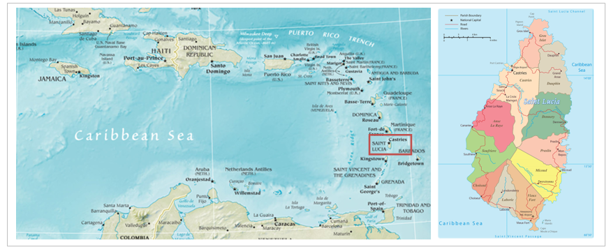
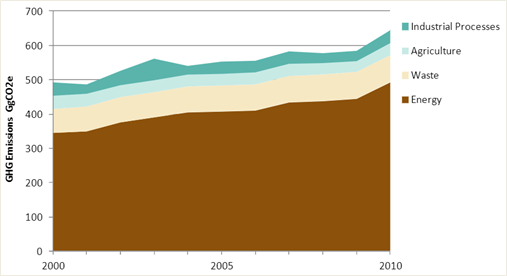

This mini-lecture, the last in Lecture block 2, brings all the information from the previous mini-lectures together via a case study on the small island developing state of Saint Lucia. To do this, the case study applies the approach to developing infrastructure targets within NDCs presented in mini-lecture 2.2 step by step.
This case study provides a walkthrough of each step (outlined in mini-lecture 2.2) using relevant information from Saint Lucia. The information has been extracted from key policy documents, strategies, plans, Saint Lucia’s Intended Nationally Determined Contributions (INDC), as well as their recently updated NDC.
Saint Lucia is a Small Island Developing State (SIDS) in the Caribbean region (Figure 2.4.1). The volcanic island is characterised by mountainous terrain and a tropical climate, attractive to tourism but prone to meteorological hazards.
Saint Lucia is an independent nation with a middle-income economy driven primarily by tourism and services. According to Saint Lucia’s Medium-Term Development Strategy, development measures focus on the healthcare, education, citizen security, agriculture, infrastructure, and tourism sectors (Government of St. Lucia 2020).

Figure 2.4.1: Map of the Caribbean and Saint Lucia (Vital 2019)
In 2018 the government’s Department of Finance launched the National Integrated Planning Programme (NIPP) Unit. The NIPP Unit engages in long term infrastructure planning, implementation, policy development, and evaluation of the performance of present and future infrastructure initiatives. The unit is responsible for producing the Saint Lucia National Vision Plan, National Infrastructure Agenda, and Fast-Track Analysis.
Saint Lucia’s Medium-Term Development Strategy 2020-2023 quotes infrastructure as a key result area. The strategy highlights the transport system as crucial for infrastructure development and identifies sustainable energy in the form of renewable energy and energy efficiency as a critical cross-cutting development area (Government of St. Lucia 2020). These two areas can therefore be considered as Saint Lucia’s priority infrastructure systems.
Saint Lucia’s 2010 greenhouse gas inventory was conducted in line with the IPCC Revised Guidelines for National Greenhouse Gas Inventories (Volumes 1,2, and 3). The inventory covered the energy, industrial processes, solvent and other product use, agriculture, land-use change and forestry, and waste. Without Land Use, Land Use Change, and Forestry (LULUCF), Saint Lucia generated 646.9 GgCO2eq (Giga tonnes of carbon dioxide equivalent) in 2010. Including LULUCF decreased this value to 524.0 GgCO2eq due to carbon sequestration of natural vegetation.
As seen in Figure 2.4.2, the energy sector caused the greatest percentage of these emissions. The energy sector in the inventory included combustion emissions sourced from the energy industries, manufacturing industries, construction, civil aviation, road transportation, navigation, commercial/institutional, residential, and agriculture, forestry, and fishing. Specifically, energy for electricity generation and transportation accounted for 38.8% and 30.5% of total emissions (excluding LULUCF), respectively. Combined, these two sectors produced 69% of Saint Lucia’s greenhouse gas emissions (Government of St. Lucia 2015). Therefore, given their high carbon intensity, the energy and transportation sectors have immense mitigation potential.

Figure 2.4.2: Sectoral breakdown of Saint Lucia’s total greenhouse gas emissions (excluding LULUCF) (Government of St. Lucia 2015)
Saint Lucia is vulnerable to several hazards due to its seismic location, position in the tropical cyclone belt, small size, mountainous terrain, and lack of economic diversification. Climate change exacerbates and adds to these hazards in the form of, among others, sea-level rise, changed rainfall patterns, as well as more severe tropical storms, flooding, landslides, and storm surges (Government of St. Lucia 2018).
Given these realities, Saint Lucia’s National Adaptation Plan (NAP) defines 271 adaptation measures for the next 10 years across eight critical areas: water, agriculture, fisheries, infrastructure and spatial planning, natural resource management, education, health, and tourism (Government of St. Lucia 2018).
Under infrastructure and spatial planning, the NAP details measures to enhance infrastructure resilience. Contributing to this aim, the Saint Lucia National Infrastructure Assessment evaluated hazard exposure across the island’s economic, social, and natural assets. The assessment indicated that 80% of the island’s economic infrastructure was susceptible to at least one of four major hazards: sea-level rise, storm surges, flash floods, or landslides. The assessment found the transport sector to be most at risk: 57% of the national freight capacity is at risk of storm surges and flash floods. Also, of notable mention, 12% and 16% of the electricity sector is at risk of flash floods and landslides, respectively. Further, the water sector was shown to be particularly prone to landslides (Adshead et al. 2020).
Focusing adaptation efforts on the transportation, electricity, and water sectors would therefore safeguard against the loss of these services and the indirect impact on interconnected areas such as economic growth and healthcare.
Step 4:
As a SIDS with limited resources, Saint Lucia’s INDC was conditional. The INDC estimated the cost of achieving its mitigation targets by 2030 to be USD241 million and indicated that its mechanisms could not be achieved without financial and technical support (Government of St.Lucia 2015). The government further expressed their intention to pursue a mix of financing options including private sector financing, regional agency and programme support, bilateral support, and concessional finance.
Step 5:
Saint Lucia’s INDC recognised the sustainable development benefits of adaptation and mitigation action. As seen in Table 2.4.1, the INDC highlighted co-benefits primarily relating to economic growth and poverty eradication (Government of St.Lucia 2015).
Table 2.4.1: Sustainable development co-benefits identified in Saint Lucia’s INDC
| INDC | |
|---|---|
| Sustainable Development Co-benefits | Directly Related SDGs |
| Investment and technological advancement | 8 |
| Employment generation | 1, 8 |
| Fuel foreign exchange savings | 8 |
| Energy cost savings across sectors | 1, 8 |
| Human health | 3 |
Step 6:
Saint Lucia submitted its updated NDC in January of 2021. The new NDC brings the country’s national priorities, mitigation potential, adaptation needs, implementation capabilities, and sustainable development needs together. It focuses mitigation and adaptation on the electricity generation and transportation systems. As seen in Steps 1 to 5 from various government strategies, plans, and assessments, the energy and transportation systems are national infrastructure development priorities, high greenhouse gas emitters, most at risk to hazards, and lead to sector-wide economic benefits.
Step 7:
The updated NDC commits to an absolute greenhouse gas emissions reduction target of 7% relative to 2010 levels by 2030 in the energy sector given international support. This percentage is an increase from the INDC’s conditional commitment to 2% greenhouse gas emission reduction within the same constraints (Government of St. Lucia 2021).
Saint Lucia’s NDC provided additional updates and all information required for clarity, transparency, and understanding. The following points summarise the major updates:
The Government of Saint Lucia plans to develop a Long-Term Strategy to 2050 for decarbonisation across all sectors. The strategy will inform subsequent NDCs.
A 2018 greenhouse gas inventory was conducted in 2020. Its publication is currently under development.
Under the NAP, Sectoral Adaptation Strategy and Action Plans (SASAPs) have been developed for the agriculture, fisheries, and water sectors, and for resilient ecosystems. Additional SASAPs are to be developed for the other key areas: tourism, infrastructure and spatial planning, education, and health.
The Government of Saint Lucia has developed an Implementation Plan, Financing Strategy, and Partnership Plan for the NDC. The total cost of implementing the NDC was estimated to be USD368 million. This cost includes the operation, maintenance, fuel expenses, and energy savings from the mitigation initiatives. The NDC highlighted the need for financial support to enable the implementation of both mitigation and adaptation measures. Additionally, the NDC introduced adaptation limitations brought about by insurmountable climate change impacts such as extreme weather events and slow onset events. These limitations lead to the need for financial support for loss and damage costs incurred.
The updated NDC, following from the INDC, highlighted sector-wide sustainable development co-benefits. The NDC specifically mentioned benefits to education, health, food security, water and sanitation, housing and social protection, economic growth, gender, and youth.
This mini-lecture walked through the basic information required to develop NDCs using Saint Lucia as a case study. The mini-lecture sought to synthesise the material covered in Lecture block 2 on infrastructure systems’ greenhouse gas emissions, mitigation targets, and sustainable development impact.